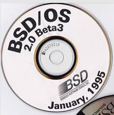
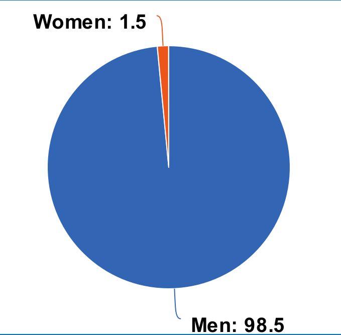
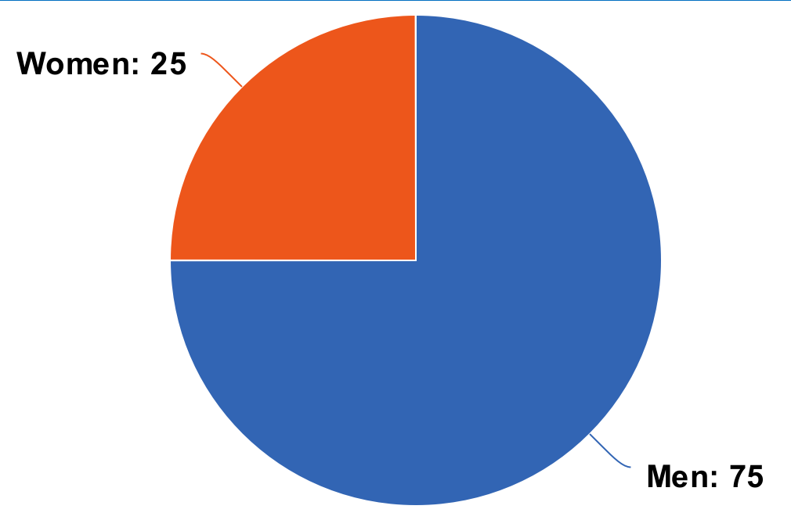

Hardy Heron
All hail monopoly!
UNIX
Open source initiative
"as an educational, advocacy, and stewardship organization at a cusp moment in the history of that culture."
Legal issues
Gender Diversity in Open Source
Women in open source
Women in tech professions
Open source failed